112 × 67 RGBA
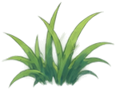
145 × 113 RGBA
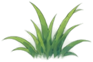
135 × 90 RGBA
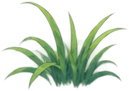
182 × 129 RGBA
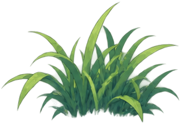
301 × 206 RGBA
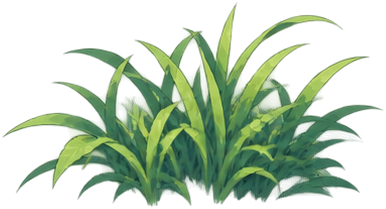
386 × 209 RGBA
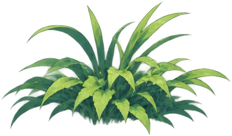
398 × 233 RGBA
226 × 106 RGBA
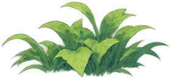
280 × 130 RGBA
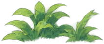
213 × 91 RGBA
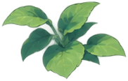
182 × 116 RGBA
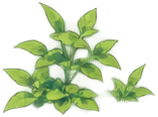
158 × 117 RGBA
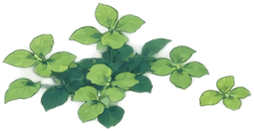
254 × 131 RGBA
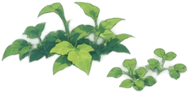
267 × 131 RGBA
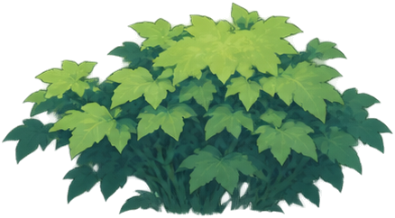
438 × 242 RGBA
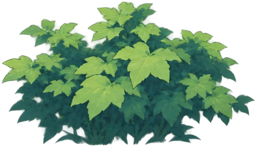
433 × 249 RGBA
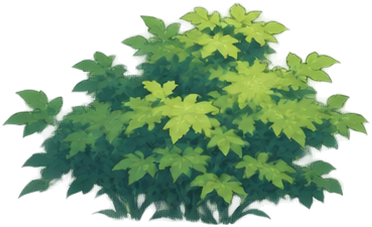
372 × 227 RGBA
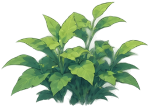
255 × 183 RGBA
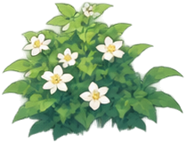
209 × 161 RGBA
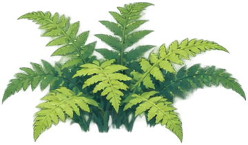
360 × 210 RGBA
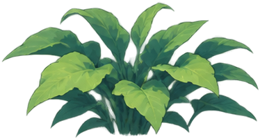
374 × 201 RGBA
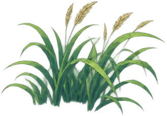
329 × 230 RGBA
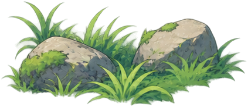
423 × 184 RGBA
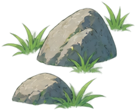
228 × 186 RGBA